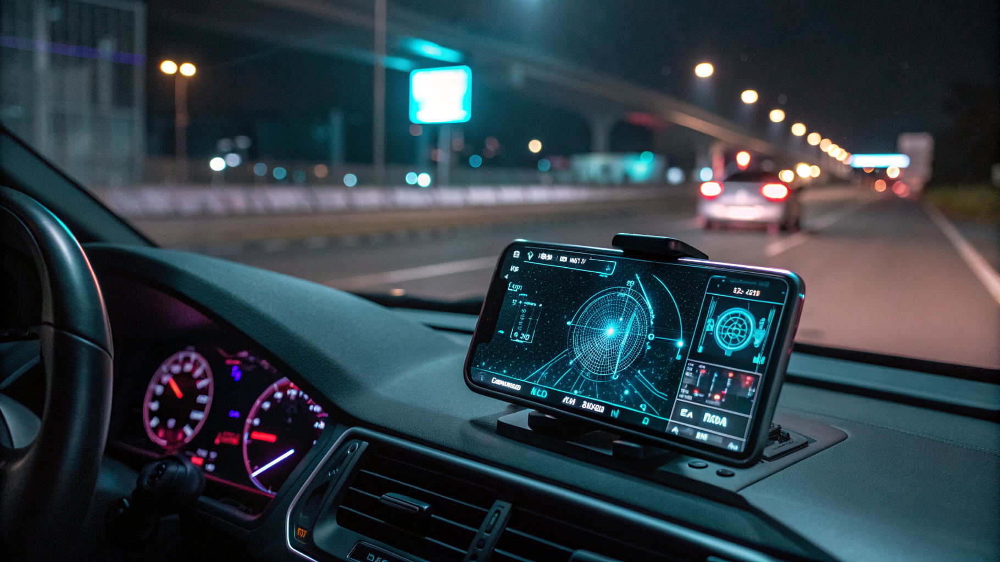

Come Ridurre Sprechi di Tempo e Costi nella Sicurezza Outdoor con AURA Proximity

Ottimizzare la Sicurezza e la Gestione dei Viaggi Outdoor con AURA Proximity per Motociclisti, Camperisti, Atleti e Responsabili Sicurezza
- Gestione integrata e senza sprechi per viaggi in colonna anche senza copertura cellulare.
- Interventi rapidi in caso di cadute o emergenze con tecnologia Man-Down e SOS automatico.
- Comunicazione efficiente con chat mesh P2P 100% Web e co-pilota vocale a mani libere, senza app da scaricare.
Analisi approfondita della notizia e delle implicazioni operative
Il mondo outdoor, dalle attività sportive a gruppi professionali come i responsabili della sicurezza nei cantieri o le guide escursionistiche, sconta un problema operativo di primaria importanza: l’assenza di una soluzione efficace per la gestione della sicurezza e comunicazione durante viaggi in luoghi isolati o su percorsi con scarsa o nulla copertura di rete cellulare 4G. In particolare, motociclisti, camperisti, atleti e professionisti che operano in zone impervie rischiano di trovarsi disconnessi dal mondo, esposti a pericoli non rilevati tempestivamente e difficili da gestire senza strumenti tecnologici adeguati.
Le tradizionali modalità di gestione e sicurezza, basate su telefonate o applicazioni mobili, sono spesso inefficaci in contesti outdoor, causando ritardi nei soccorsi e aumenti considerevoli nei costi di gestione. Questo scenario rappresenta non solo un problema di sicurezza, ma anche di efficienza organizzativa e ottimizzazione delle risorse.
Le conseguenze e i costi di non agire
La mancanza di un sistema affidabile per la comunicazione e localizzazione può tradursi in gravi rischi: viaggi in colonna (auto o moto) possono subire rallentamenti, disorientamento o incidenti difficili da gestire; lavoratori isolati in cantieri o sentieri rischiano cadute o infortuni senza possibilità immediate di soccorso; la mancata copertura 4G sui tracciati escursionistici rende inefficaci le emergenze tradizionali.
Tutto ciò si traduce in sprechi enormi di tempo e risorse economiche, tra tentativi falliti di comunicazione, perdita di coordinamento e interventi di emergenza inefficaci o tardivi. Le organizzazioni si trovano quindi a dover sostenere costi crescenti per la gestione della sicurezza, pagando sulla lunga distanza con inefficienza e alto rischio reputazionale e legale (specialmente in ambito D.Lgs 81/08).
Come AURA Proximity risolve il problema
AURA Proximity, il SaaS di RM Studio, si presenta come la soluzione innovativa e tecnicamente avanzata per superare queste criticità. Il suo radar di prossimità tattico e la chat Mesh P2P al 100% Web consentono una comunicazione affidabile e continua anche in assenza di rete cellulare.
Questa piattaforma non richiede l’installazione di app: funziona direttamente via browser con un’interfaccia intuitiva integrata con il Co-Pilota Vocale a mani libere, per mantenere la concentrazione sulle attività senza distrazioni. La tecnologia Man-Down rileva automaticamente impatti o cadute sopra i 3G e invia immediatamente un SOS WhatsApp, fornendo così un sistema di allerta rapido e diretto. La bussola direzionale 3D permette inoltre di orientarsi con precisione in tempo reale.
Grazie a AURA Proximity, professionisti e gruppi outdoor riducono drasticamente i tempi di gestione e i costi associati alla sicurezza, garantendo un controllo serrato sulle situazioni critiche anche in ambienti remoti e privi di copertura telefonica.
| Aspetto | Gestione Tradizionale | Con AURA Proximity |
|---|---|---|
| Copertura di rete | Dipendente da 4G/5G, spesso assente su sentieri e cantieri isolati | Funzione Mesh P2P 100% Web, senza bisogno di rete cellulare |
| Gestione emergenze | Rilevamento manuale, ritardo nei soccorsi, più rischi | Rilevamento Man-Down automatico con SOS WhatsApp immediato |
| Comunicazione | Chiamate e app esterne, difficoltà in movimento e mani occupate | Chat Mesh via browser, co-pilota vocale a mani libere integrato |
| Orientamento in viaggio | Assente o via strumenti separati | Bussola direzionale 3D integrata nel sistema |
| Costi operativi | Alti, spese imprevedibili per ritardi e inefficienze | Piani chiari: Pass singolo €4.90 o Piano Pro €19/mese, senza app da scaricare |
💡 Ti è stato utile questo approfondimento?
Condividilo con un collega o un amico del settore Motociclisti, Camperisti, Atleti, Responsabili Sicurezza Cantieri (D.Lgs 81/08) e Guide Outdoor a cui potrebbe interessare!
FAQ - Domande frequenti per professionisti del settore
1. AURA Proximity funziona anche senza connessione internet?
Assolutamente sì, la tecnologia Mesh P2P permette la comunicazione diretta tra dispositivi via browser anche in assenza di rete cellulare.
2. È necessario installare un’app dedicata?
No. AURA Proximity è 100% Web e funziona direttamente da browser, senza bisogno di scaricare app o aggiornamenti.
3. Come garantisce i soccorsi in caso di cadute o incidenti?
Attraverso un sistema Man-Down che rileva impatti maggiori di 3G e invia automaticamente un messaggio SOS via WhatsApp, localizzando il soccorritore in modo rapido ed efficiente.
Inizia Subito
Pass Viaggio Singolo a €4.90 o Piano Pro a €19/mese. Nessuna app da installare.
Fonti Ufficiali e Risorse Esterne
Scopri l'Intelligenza Artificiale per la tua attività
Ottimizza i processi e aumenta le vendite con le soluzioni B2B di RM Studio.
Scopri AURA Proximity